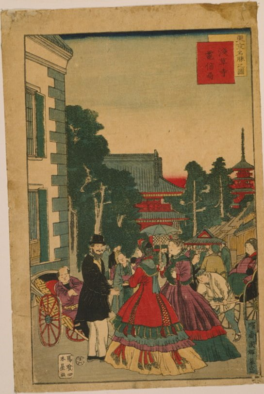
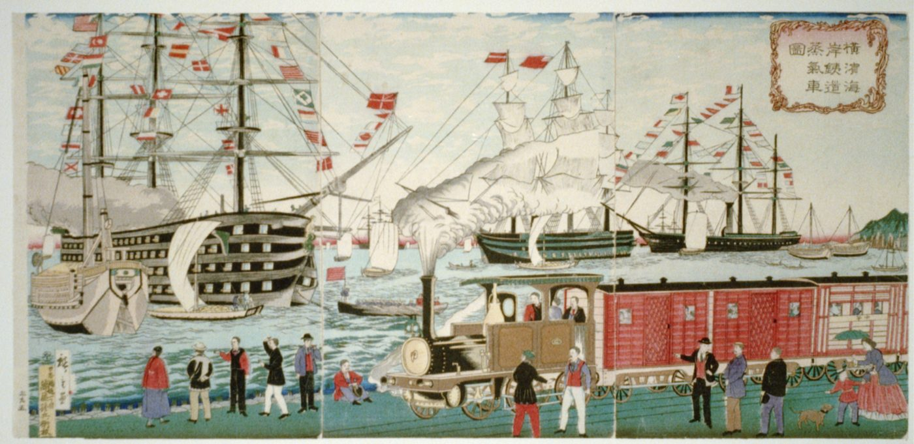
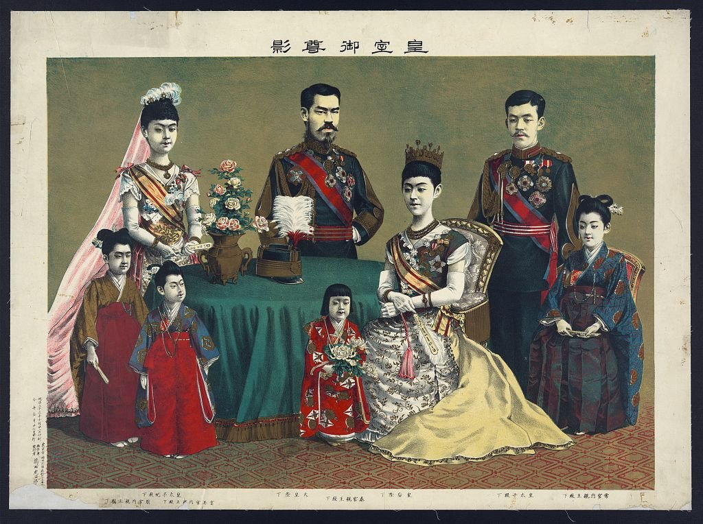
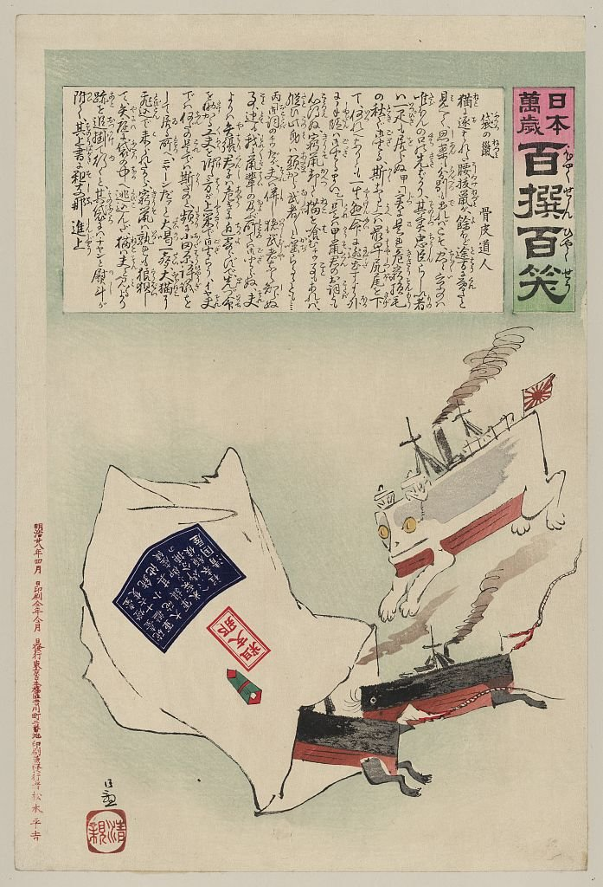

Unit 8 · Study guide · Japan
The Meiji Transformation 明治維新
A new state, a constitution, factories, and an empire, 1868–1900
ContentsOverview
The unit in one paragraph
pp. 347, 362
In 1868 a small group of samurai and court nobles, the oligarchs, took power in the name of the young Meiji emperor. Afraid of the West, they abolished the domains and the old status order, made every man liable for military service, taxed land in cash, and sent children to school. Farmers rioted and samurai rebelled; local notables demanded a voice. The oligarchs answered with a constitution (1889) and an elected Diet (1890) that still kept power in their hands. They built railroads and factories, then sold most of them to well-connected businessmen. Western dress and ideas spread, followed by a conservative push for loyalty and harmony. Abroad, Japan did to its neighbors what the West had done to it, and by 1895 it had beaten China. By 1900, the textbook concludes, Japan's peoples had become citizens of a centralized, industrializing nation.
- How much did the changes after 1868 build on what had gone before?
- Was the Meiji Restoration a revolution in politics and society, or simply a transition?
- Did modernization mean westernization?
Timeline at a glance
Key terms first
Terms are grouped by topic. Where a term depends on another, the entry says what it builds on, so read those first. Hover or tap any dotted term in the text for a quick definition, or open ✎ Key terms at the bottom right. † marks a term or fact from outside the textbook. Terms from Unit 7 are repeated briefly where you need them.
From Unit 7 (review)
- Daimyo · domain
- A daimyo was a lord whose domain (territory) produced over 10,000 koku of rice. Under the Tokugawa, each ran his domain as he saw fit and kept a band of samurai retainers. pp. 289, 348–349
- Satsuma · Chōshū (Sat-chō)
- Two large domains in the southwest, once kept out of Tokugawa policymaking, whose 1866 alliance overthrew the shogunate. Their samurai formed the core of the new leadership. pp. 345–347Builds on: daimyo
- Meiji Restoration
- Making the Meiji emperor head of state in 1868. It is called a restoration because the new regime claimed to restore the emperor to the power his ancestors had held in the 700s. pp. 346–347
- Unequal treaties
- The treaties of 1854–58 imposed under threat of force. They gave foreigners extraterritoriality and held Japan's tariffs (taxes on imports) low. Revising them was a main Meiji goal. pp. 339, 349, 361
- Extraterritoriality
- The right of foreigners to be tried under their own country's laws rather than the host country's. Japan won its end in the 1890s, then imposed it on others. pp. 339, 359, 361Builds on: unequal treaties
- Kokutai
- Japan's "national polity," its unique spiritual essence centered on the emperor. Mito scholars coined the idea; the 1890 Rescript on Education asked students to be loyal to it. pp. 338, 359
The new state
- Oligarchs
- The small group of men, mostly samurai from Satsuma and Chōshū plus a few court nobles, who led the overthrow of the shogun and then ran the government in the emperor's name. They are called oligarchs because they monopolized power. They often disagreed with one another. pp. 347–348Builds on: Sat-chō
- Oath of 1868 (Charter Oath†)
- The emperor's first pronouncement, sworn to the gods before nobles and daimyo. It promised unity for the nation's good, policy by public discussion, the chance for all to pursue their ambitions, an end to "uncivilized customs," and a search for knowledge worldwide. Its vague wording hid the oligarchs' disagreements. Usually called the Charter Oath. p. 348Builds on: oligarchs
- Five Injunctions
- Orders to commoners issued the day after the oath: practice the Confucian virtues of loyalty, filial piety, chastity, obedience, and harmony; stop protests; shun Christianity; follow international law; and stay in Japan. p. 348See also: oath of 1868
- Shizoku
- "Former samurai," the single category the government created for all retainers above the level of foot soldier. About 2 million lost their hereditary positions in 1871 and received only small stipends, later changed to government bonds. p. 349
- Abolition of domains · prefectures
- In 1871 the oligarchs abolished some 270 domains and set up prefectures, centrally run provinces, first 72 and later 50, to centralize tax collection. The biggest daimyo became prefectural governors. p. 349Builds on: daimyo
- Household registration
- The 1871 system that made each household head register a legal residence and report births, deaths, marriages, and divorces. It also made it impossible for former outcasts to hide their past. p. 349
- Iwakura mission
- The 1871 delegation of 49 officials, 58 students, and five girls, led by the former court noble Iwakura Tomomi. It went to revise the unequal treaties, was told reform must come first, and turned into a study tour of prisons, schools, factories, and ministries. pp. 349–350Builds on: unequal treaties
Reforms and resistance
- Rich Country, Strong Army
- The era's slogan (fukoku kyōhei): build national wealth and military power together. It justified conscription and state industry, and later the costs borne by people near the Ashio mine. pp. 340, 351, 357
- Conscription ordinance (1873)
- Yamagata Aritomo's law, modeled on German and French practice, calling all men over 20 to three years of active duty and four in the reserves. Heads and heirs of family farms and businesses were exempt, and exemptions could be bought. By ending the samurai's monopoly of force, it did more than any other reform to erase status lines. p. 351Builds on: shizoku
- "Blood tax"
- The conscription ordinance's term for every citizen's duty to sacrifice for the country. Some farmers took it literally and thought the government wanted their blood. p. 351Builds on: conscription ordinance
- Land tax (1873)
- A single, uniform property tax on farmland, set at 3 percent of assessed value, replacing the old mix of domain taxes on changing harvests. It gave the state a steady income; protests cut it to 2.5 percent in 1876. It supplied nearly 80 percent of revenue through the 1880s. pp. 351–353
- Gōshi
- "Rustic warriors" in Satsuma who had assigned land to cultivators and treated them like tenants. The land tax took their income, status, and privilege, and they became the shock troops of the Satsuma Rebellion. p. 352Builds on: land tax
- Satsuma Rebellion (1877)
- The largest and last of more than thirty samurai uprisings of 1874–77, led by Saigō Takamori after he lost the Korea debate. It took 65,000 conscript troops eight months to crush; Saigō killed himself. p. 351Builds on: shizoku, conscription
- Educational Code (1872)
- The decree requiring eight years of school for all children (cut to four in 1879, raised to six in 1907), with exams to qualify for middle school and university. Communities had to pay for the schools. pp. 350, 359
- State Shinto
- The 1870s system that grouped local shrines under the Ise shrine to the sun goddess, so people worshipped gods of national as well as local importance. It followed the 1868 order to separate Shinto from Buddhism. Yasukuni shrine (1869) housed the war dead. p. 350
- "New commoners"
- The name for former outcasts once status distinctions were erased. Their official equality set off protests by other commoners, and they lost their old monopoly over leatherwork. p. 350
- Ōmoto-kyō
- The sect organized in 1899 from the revelations of Deguchi Nao, a poor illiterate woman possessed by a god in 1892. It taught that the money-loving social order would be destroyed and replaced by divine harmony and equality, and it was repeatedly persecuted. p. 352
Constitution and Diet
- Popular Rights Movement
- The campaign for an elected national assembly, a constitution, and rights, set off by Itagaki's 1874 petition and the 1875 promise of a constitution. Former samurai, village officials, rural entrepreneurs, journalists, women speakers, and poor farmers took part. p. 353
- Peace preservation laws
- Laws that grew harsher in answer to the Popular Rights Movement: press censorship from 1875, and the 1880 Ordinance on Public Meetings, which put police at meetings to check that speakers kept to approved texts. p. 353Builds on: Popular Rights Movement
- Meiji Constitution (1889)
- The constitution drafted in secret by Itō Hirobumi after study in Berlin, and bestowed by the emperor on February 11, 1889. It defined the emperor as sovereign and sacred, created the Diet, and listed subjects' rights and duties, each limited by law. pp. 353–354
- Imperial Diet
- The two-chamber national assembly. The upper house was filled by the new peerage (oligarchs, former daimyo, court nobles); the lower house was elected. It could approve the budget, which gave it more power than the oligarchs intended. pp. 353–354Builds on: Meiji Constitution
- Cabinet
- The prime minister, appointed by the emperor, and the ministers who ran education, finance, foreign affairs, and other ministries. It replaced the Council of State in 1885 and made policy. p. 353
- Privy Council
- A new advisory body, headed by Itō, that met to discuss the finished constitution before it was issued. p. 353
- Genrō
- "Elder statesmen," the title the oligarchs gave themselves after the constitution was issued. Not mentioned in the constitution, they picked cabinet ministers for the emperor. p. 353Builds on: oligarchs, cabinet
- Suffrage
- The right to vote. For the first Diet it was limited to men paying at least 15 yen a year in property taxes, just 1.1 percent of the population, most of them rural. Yamagata widened it to 2.2 percent in 1900. pp. 354–355Builds on: Imperial Diet
- Political parties
- Groups organized to win Diet seats: the Liberal Party (Itagaki) and the Progressive Party (Ōkuma), both led by men pushed out of the oligarchs' circle; and in 1900 Itō's own Friends of Government (Seiyūkai). pp. 354–355, 386Builds on: Imperial Diet
Economy and work
- Mitsubishi · Mitsui
- Business houses that grew rich on government connections. Iwasaki Yatarō built Mitsubishi on a shipping line bought from Tosa plus cheap state loans; Fukuzawa advised both. They became the largest conglomerates, later called zaibatsu. pp. 355, 357, 384–385
- Intermediate technology
- Western machines and methods scaled and adapted to Japanese conditions by entrepreneurs and artisans: cheaper matches for Asian markets, or small water-powered silk-spinning mills in mountain valleys near silk farms and young women workers. p. 356
- Matsukata deflation
- Finance Minister Matsukata Masayoshi's cure for the 1880 crisis: balance the budget, back the currency with gold and silver, sell state industries (except railroads, telegraph, and arms) at a loss, and shrink the money supply by 20 percent. Prices stabilized, but many farmers lost their land. p. 356Builds on: land tax
- Oyakata
- Bosses who contracted for specific jobs in heavy industry. Because workers, not managers, ran the factory floor, skilled men kept a measure of independence and pride. p. 357
Ideas and culture
- Civilization and Enlightenment
- The slogan, coined by Fukuzawa Yukichi, for remaking Japan along Western lines: schools, hospitals, newspapers, hygiene, dress, hairstyles, and ideas of self-help. Oligarchs, city intellectuals, and village notables all promoted it. p. 357
- Meiji 6 Society
- A group of intellectuals founded in Tokyo in 1873 (Meiji year 6). Its journal debated representative government, foreign affairs, reform of the language, ethics, religion, and roles for women. Fukuzawa was a leading member. p. 357See also: Civilization and Enlightenment
- Deer-Cry Pavilion (Rokumeikan†)
- The two-story brick building with a ballroom, billiard room, and restaurant that the foreign minister built in 1883 for parties with foreigners, where husbands and wives danced together. Its style gave the late-1880s government the nickname "dancing cabinet." p. 358
- Good wives and wise mothers
- The ideal, pressed by women's magazines and the schools, that women should be educated so they could serve the nation as wives and mothers, not as political actors. pp. 358–359
- Social Darwinism
- The application of "survival of the fittest" to nations: nations must conquer or be conquered. Japanese leaders and writers drew on it to justify both reform at home and expansion abroad. pp. 313, 353, 359
Conservatism and empire
- Imperial Rescript on Education (1890)
- The emperor's statement urging students to practice filial piety, harmony, sincerity, and benevolence; respect the constitution; obey the laws; and be loyal to the kokutai. It marked education's turn from practical knowledge to civic morality. p. 359Builds on: kokutai
- Civil Code (1898)
- The law code that gave all men and single women legal equality, choice, and private property, while keeping the house's authority in its male head: eldest sons inherited everything and husbands controlled wives' land and buildings. p. 359
- Internal colonies
- Territories on Japan's edges, Hokkaido (land of the Ainu) and the Ryukyu Islands, that were absorbed as prefectures and ruled for Japan's benefit. pp. 359–360, 362
- Line of sovereignty · line of interest
- Yamagata's 1890 doctrine: to stay independent, Japan must defend its own borders (line of sovereignty) and an outer ring of neighboring land (line of interest). Korea lay inside the line of interest. p. 360
- Sino-Japanese War (1894–95)
- The nine-month war with China fought over Korea. Japan drove China's army from Korea, sank its northern navy, and took Port Arthur and the Liaodong peninsula. p. 361Builds on: line of interest
- Treaty of Shimonoseki (1895)
- The April 1895 peace that gave Japan Taiwan, the Pescadores, Port Arthur and the Liaodong peninsula, and an indemnity (war payment), and made China promise to respect Korea's autonomy. p. 361Builds on: Sino-Japanese War
- Triple Intervention
- One week after Shimonoseki, Russia, France, and Germany "advised" Japan to give up its gains on the Chinese mainland. Japan had to comply; Russia then took Port Arthur and the Liaodong peninsula itself. pp. 311, 361–362Builds on: Treaty of Shimonoseki
Building a new state
pp. 347–350
The oligarchs were a loose group of samurai from Satsuma and Chōshū, a few activist court nobles, and loyalists from other domains. The textbook stresses that they had little idea what they wanted to build and disagreed about it. p. 347
Two messages, two audiences p. 348
Oath of 1868
- Everyone unites to promote the nation's well-being.
- Policy is decided by public discussion.
- All may pursue their legitimate ambitions.
- Uncivilized old customs are abandoned.
- Knowledge is sought worldwide to build the empire.
Five Injunctions
- Practice loyalty, filial piety, chastity, obedience, and harmony.
- Stop demonstrations and protests.
- Shun Christianity.
- Follow international public law.
- Stay in Japan.
- "Public discussion" meant the oligarchs themselves, not a parliament, though it was later read that way.
- "Pursue ambitions" hinted that hereditary status would end, promising social mobility.
- "Abandon old customs" admitted that international law and the treaties carried Western cultural pressure.
- "Seek knowledge": learning was to serve the state.
From domains to prefectures pp. 348–349
At first the oligarchs copied eighth-century models: a Council of State with 106 advisers, and briefly a Council of Shinto Affairs of equal rank. They reorganized it four times in four months. Most daimyo still ran their domains, so the new government controlled only the former shogun's lands and lived on gifts from daimyo, merchants, and rural entrepreneurs.
- 11869. The daimyo of Satsuma and Chōshū formally return their land and population registers to the emperor, expecting to be confirmed as governors. Others follow.
- 21869. All retainers above foot soldier are lumped into one class, shizoku.
- 31871. About 270 domains are abolished and replaced by prefectures; 170,000 towns and villages begin to be merged; household registration starts.
- 4Result. Taxes and administration run from Tokyo (Edo, renamed in 1869). Neither daimyo nor samurai became landed gentry, because Tokugawa rule had already turned them into salaried officials.
The Iwakura mission, 1871–73 pp. 349–350
With the domains gone, one faction of oligarchs left for the United States and Europe to revise the unequal treaties. President Ulysses S. Grant told them the powers would never agree until Japan rebuilt its laws and institutions along Western lines, so the mission became a study tour of prisons, schools, factories, and ministries.
The travelers had expected nothing to change while they were away. In 1873 they rushed home when Saigō Takamori proposed invading Korea, which had refused to accept the new government's letters. They opposed not war itself but its timing: reform at home had to come first.
Rice became an everyday staple only after imports from Korea and China began in 1873; before that most people ate wheat, barley, and millet. The government promoted meat to build stronger workers and soldiers, founding a beef company in 1869; sukiyaki was a Meiji invention. Bread caught on once it was adapted to Japanese taste.
Not all of it helped: overly refined rice caused beriberi among soldiers.
Reforms and resistance
pp. 350–353
Many farmers had hoped the Restoration would bring prosperity and justice. Instead taxes, rents, and interest stayed high, outsiders replaced familiar officials, and orders arrived without warning or explanation. The first ten years of Meiji saw more protest and violence than any time in the Edo period. p. 350
Orders from Tokyo p. 350
- Western experts hired to remake government, economy, and schools.
- Civil and criminal codes that judged the crime, not the status of the accused.
- Telegraph lines and railroads to link the country.
- The Western calendar from January 1, 1873, replacing the lunar calendar farmers planted by.
- Traditional men's hairstyles outlawed; village festivals suppressed.
- Outcasts made "new commoners," which other commoners protested.

Religion remade p. 350
In 1868 the oligarchs ordered Shinto separated from Buddhism, stripping Buddhist statues, rituals, and priests from shrine-temple complexes. Officials inspired by Hirata Atsutane (Unit 7) destroyed temples that held farmers' ancestral tablets. Yasukuni shrine (1869) honored the war dead, and State Shinto placed local shrines under Ise. Edo-period new religions were recognized as "Sect Shinto," but new ones were suspect. Buddhist priests fought back by preaching against Christianity and helping settlers in Hokkaido.
The three reforms that hit hardest pp. 350–352
The Educational Code required eight years of school for every child, to make productive citizens. Over time attendance rose to 90 percent (in the 1900s).
Resistance: communities paid the bill, so farmers wrecked nearly 200 schools in 1873–77. Many parents kept children, especially daughters, at home.
The ordinance put defense on the masses and taught conscripts the leaders' goals. It ended the samurai monopoly on arms.
Resistance: farmers read the "blood tax" literally and protested in 16 places; samurai rose more slowly but at a higher cost in lives.
A single cash tax on land gave the state steady income. Surveys mostly confirmed farmers' existing rights.
Resistance: those who misjudged markets or lost crops sold land to pay; some areas were taxed twice. Protests forced a cut from 3 to 2.5 percent in 1876.
The end of the samurai p. 351
Saigō Takamori wanted a national army of men bred to fight. Outvoted on Korea in 1873, he left the government. In 1876 shizoku were forbidden to wear their two swords. More than thirty rebellions broke out in 1874–77; the last, the Satsuma Rebellion, had Satsuma's gōshi as its shock troops. In 1878 Ōkubo Toshimichi, a Satsuma oligarch who had opposed invading Korea, was assassinated, ending the samurai counterrevolution.
Where the money came from pp. 352–353
The oligarchs promoted industry but thought like farmers' lords: nearly 80 percent of revenue came from the land tax through the 1880s. The textbook's table shows how slowly that changed.
Customs duties stayed a small share partly because the unequal treaties held Japan's tariffs low (p. 339). Watch the liquor tax grow after Matsukata's new taxes on sake (Part 4).
Deguchi Nao, founder of a new religion (1836–1918)
- Childhood Born near Kyoto into a family on its way down; her father drank and died when she was nine. She worked for a merchant and won a domain prize as a filial daughter.
- Marriage Pushed by her aunt Yuri, who drowned herself after Nao refused, into an arranged match. Blaming a fever on Yuri's angry spirit, she gave in.
- 1872–1887 Bore eleven children (three died young), ran a failed restaurant, sold bean buns, collected rags; after her husband's death she also worked in a silk-spinning factory.
- 1892 Possessed by a god while collecting rags. Once humble, she now spoke with divine authority: the emperor and oligarchs, who rewarded vice and money, were absolute evil and would be replaced by a world of harmony and equality. The illiterate woman wrote hundreds of texts and healed by faith.
- 1899–1918 Her adopted son Onisaburō organized Ōmoto-kyō, which grew fast and was repeatedly persecuted. Nao quarreled with him for refusing to reject everything modern, and died frustrated.
Think about it (book's questions): How did Nao become a prophet? What was her message? How does she fit within Japanese religious beliefs? Compare the new religions in Unit 7.
Popular rights and the constitution
pp. 353–355
The oligarchs quarreled among themselves. In the early 1870s Kido Takayoshi and Ōkubo proposed some popular representation so that arbitrary rule would not cause unrest. Itagaki Taisuke, shut out of power, left in 1874, formed the Patriotic Party with discontented shizoku from Tosa, and petitioned for an elected national assembly. Invited back at the 1875 Osaka Conference, he got prefectural assemblies (1878) and a plan for a national one; months later the emperor promised a constitution. p. 353
Voices of the movement p. 353
The promise set off the Popular Rights Movement. Petitions for an immediate assembly gathered hundreds of thousands of signatures, and local notables drafted model constitutions.
Kishida Toshiko & Fukuda Hideko
Women who lectured publicly for women's rights, liberty, education, and equality. A woman property holder also demanded the vote in prefectural elections and was refused.
Baba Tatsui
Used Social Darwinism to argue that democracy was the most advanced form of government and so should come now.
Ueki Emori
Drew on French and British natural-rights theory to argue for popular sovereignty and a right of revolution.
Radicals and poor farmers
Rioted and plotted attacks in the name of human rights: Fukushima (1882) and the Chichibu uprising (1884), where tenant farmers demanded debt relief.
The government answered with peace preservation laws: press censorship (1875) and police at every meeting (1880), with soldiers, police, teachers, and students barred from the audience. Uprisings met mass arrests and executions, and activists turned to forming parties for the 1890 election. pp. 353–354
Building the institutions first p. 354
The constitution described bodies the oligarchs had already set up: a General Staff answering only to the emperor (1878), a peerage for the upper house (1884), and a cabinet (1885). Itō Hirobumi spent nine months of 1882 studying in Berlin and drafted the text in secret. The Privy Council reviewed it, and on February 11, 1889, a date chosen as the anniversary of the legendary first emperor Jimmu's enthronement, the emperor presented it to the prime minister. Three days of festivities followed.
The emperor…
- exercises executive power through the cabinet
- makes law with the Diet's consent
- commands the army and navy
- declares war, makes peace, signs treaties
- decides how the government is organized
- calls the Diet and dissolves the lower house
Subjects may…
- petition, if they show proper respect
- believe freely, if it does not disturb order or their duties
- speak freely, within limits set by law
- and must serve in the military, which left women out of the category of "subject"
Both lists paraphrase the textbook's summary of the constitution, pp. 353–354.
Japan's first experiment with a parliament pp. 354–355
Data from pp. 354–355. Women could not vote at all.
Diet members could criticize the cabinet, give speeches that would have meant jail outside the chamber, and refuse the budget. Then last year's budget stayed in force, which rarely covered the government's needs. Prime ministers answered by dissolving the house, forcing costly elections; vote buying spread, and 25 people died in the 1892 election, most at police hands.
- 1898: Itō brings party leaders Ōkuma (prime minister) and Itagaki (home minister) into a coalition cabinet.
- Yamagata sabotages it through the army minister, becomes prime minister, requires army and navy ministers to be active-duty officers, and widens the vote to 2.2 percent.
- 1900: Itō founds his own party, the Friends of Government.
The General Staff's direct line to the emperor and the active-duty rule for ministers let the military act independently of civilian government, a problem Unit 10 and Unit 14 return to. pp. 354–355, 399
Industrialization
pp. 355–357
The state as builder, 1870s p. 355
- Took over the domains' and shogunate's arms works; sold some to friends on good terms. Iwasaki Yatarō built Mitsubishi on Tosa's shipping line and cheap state loans.
- Had foreign experts write banking laws; set up banks and paper money.
- Invested in railroads and shipyards, mainly to support the military.
- Built cotton mills for the home market, imported French silk-spinning technology for export, and a sugar refinery to compete with China.
The textbook's verdict: by putting state resources into industry, the oligarchs squeezed out private capital. Meanwhile farm output rose 1.5 to 1.7 percent a year, and because the land tax was fixed, the gain went to rural entrepreneurs who invested in small industry.

Private enterprise p. 356
Entrepreneurs and artisans built intermediate technology: cheap matches that undersold Western brands, small water-powered silk mills staffed by young women. Local clubs pooled capital and held industrial exhibitions. By 1900 silk thread was a third of Japan's exports, and textiles more than half.
A rural entrepreneur's son who used ties to the oligarchs to head the First National Bank, fund a private shipyard, and in 1880 start the Osaka Spinning Mill, the first of more than 100 companies. By 1900 Japan imported raw materials and exported manufactures.
Crisis and cure: the Matsukata deflation p. 356
The state prints money, private banks issue notes, rebellions cost a fortune, and state factories lose money.
Rice prices in Tokyo double, eroding the land tax. Gold and silver flow abroad.
Matsukata balances the budget, backs the currency with gold and silver, taxes tobacco and sake, and cuts money in circulation by 20 percent.
All state industries except railroads, telegraph, and arms are sold at a loss. Students abroad are recalled; foreign experts fired.
Prices stable and budget balanced, but rice fell 50 percent while taxes did not. Tenants and factory workers multiply; key industries belong to a few well-connected capitalists.
Who did the work p. 357
Single farm women in silk mills worked 18-hour days in busy seasons; those who caught tuberculosis were sent home, spreading modern Japan's worst epidemic. Married women ran 12-hour shifts in cotton mills. Owners kept wages low, assuming women lived under fathers or husbands. The first strike in Japan's industrial history: silk workers at Kōfu, 1885.
Earned up to five times women's wages and worked under oyakata, so skilled men could move between factories. Still, pay barely covered a slum shack and rice and vegetables. Railroad workers held the century's largest strike in 1898.
Worse off still. The Ashio copper mine used convict labor; its timber cutting caused deadly floods, and its toxic waste killed river life, ruined farmland, and shortened lives, setting "Rich Country, Strong Army" against ordinary people.
Women unable to find factory work turned to prostitution; poor women from Kyushu sent to brothels in Southeast Asia sent home money that helped Japan's balance of payments. p. 357
Civilization and Enlightenment
pp. 357–358
Village notables who backed popular rights also wanted a cultural revolution at home. In place of "hidebound customs" they wanted Civilization and Enlightenment, a slogan shared by city intellectuals and oligarchs. p. 357
- The Meiji 6 Society (1873) debated government, language reform, religion, and women's roles.
- Village notable Ida Bunzō read Samuel Smiles's Self Help and preached hard work, frugality, competition, and progress.
- Local discussion groups pushed hygiene, hospitals, new foods, better roads, and the unpopular new schools.
- Coined "Civilization and Enlightenment"; founded Keiō University (1868) for Western science and business.
- Western Matters described schools, hospitals, newspapers, libraries, and museums; the bestseller Encouragement of Learning urged practical study.
- Advised Mitsubishi and Mitsui. Preached education and equality for women, yet kept his own daughters uneducated and arranged their marriages.
A new look p. 358
Western clothes suited Western machines, and uniforms replaced individual samurai armor. Changing appearances might also win foreigners' respect. Men were told to stop shaving the tops of their heads; women to stop blackening their teeth and shaving their eyebrows.
The court led. At his first public appearance the Meiji emperor wore ancestral court robes, powder, and painted eyebrows; within two years he wore Western uniforms, short hair, and a beard, and the empress wore Western dress. In 1883 the foreign minister opened the Deer-Cry Pavilion, where husbands and wives socialized with foreigners, something samurai wives had never done.

Print and the modern novel pp. 358–359
Like Fukuchi Gen'ichirō's Tokyo Daily Newspaper: politics and serious editorials in a style only the highly educated could read.
Like the Yomiuri (1874): sold on street corners to the barely literate, with scandal, sex, and murder.
- Woodblock prints in bright chemical dyes celebrated trains, schools, and gaslit brick Ginza. Women's magazines urged education so women could be "good wives and wise mothers."
- Newspapers serialized novels. Tsubouchi Shōyō's Essence of the Novel (1885) called for realism; Futabatei Shimei's Floating Clouds (1887–89), told from inside a character's head in everyday language, is called Japan's first modern novel.
- Higuchi Ichiyō won fame in the male literary world late in her short life; Mori Ōgai and Natsume Sōseki, who studied in Germany and Britain, embraced modernity while questioning the West's superiority.
Conservative resurgence, 1880s–1900
pp. 358–359
By the mid-1880s many felt that copying Western customs had gone too far. The aim became to keep Western science and technology while holding on to traditional values and community. p. 358
Kanō Jigorō turned older unarmed fighting schools into judo (1882), teaching that it built character. Philosophers set an absolute standard of "the good" to suppress disruptive thought.
Gotō Shimpei of the Hygiene Bureau worked through community structures and values. Bureaucrats used factory and tenancy laws and farm cooperatives to head off social revolution.
The 1890 Police Security Regulations barred women from political activity, to remove "selfish and unpatriotic" conflict.
School as the front line p. 359
In the 1870s schools taught practical knowledge; from the mid-1880s they added Confucian ethics, Shinto myths, and civic rituals. Above compulsory school, exams sorted students up a narrow ladder, each level "crafting character suitable to their station."
In the 1870s and 1880s the emperor toured Japan; newspapers reported his diligence and care for his subjects. His portrait hung in every school and public building and had to be treated with the utmost respect. In 1890 the Imperial Rescript on Education asked students for filial piety, harmony, sincerity, benevolence, respect for the constitution, obedience to the law, and loyalty to the kokutai.
The Civil Code of 1898 struck the same balance. The legal scholar Hozumi Yatsuka warned that ancestor worship, loyalty, and filial piety would die unless the law kept the house and its male head supreme. The code gave legal equality and private property to all men and single women whatever their old status, but sent all family assets to the eldest son and let husbands manage wives' land and buildings. Divorce by mutual consent, as in the Edo period, remained. pp. 358–359
Class and gender limited the new equality: education promised mobility, but only to sons of families who could afford it, while daughters were to serve as wives and mothers. p. 359
Imperialism and modernity, 1870s–1895
pp. 359–362
When Japan copied Western technology, law, and culture, it also studied Western imperialism. Social Darwinism said nations must conquer or be conquered, and China and India showed what losing looked like. Step through the map to see how Japan drew its borders and then pushed past them. p. 359
Fukuzawa Yukichi, "Leaving Asia" (March 16, 1885)
Fukuzawa was the great liberal of domestic reform, yet here he takes a hard line abroad. His argument, in brief:
- Japan sits in Asia, but its spirit has already moved to Western civilization.
- China and Korea cling to old Confucian ways, refuse to learn, and will probably be carved up by the "civilized nations" unless they carry out a reform like the Meiji Restoration.
- Westerners judge Japan by its neighbors, which hurts its diplomacy.
- So Japan should not wait for them: it should "leave Asia," join the West, and treat China and Korea as Westerners do.
The textbook notes that the essay can be read as justifying colonialism, and that ten years later Fukuzawa rejoiced at Japan's victory over China.
Think about it (book's questions): What did Fukuzawa see as wrong with Korea and China? Why turn Japan's back on them? What did he mean by "leaving Asia"?
Revising the treaties pp. 349, 361
- 1871–73Iwakura mission told: reform your laws first.
- 1886Britain and Germany offer partial abolition of extraterritoriality for open travel by foreigners. Public outrage forces the foreign minister out.
- 1894Western powers promise to end extraterritoriality and give Japan control of its tariffs in 1899.
- 1899Extraterritoriality ends.† Full tariff control came only in 1911.†
The war and the "Triple Intervention" pp. 361–362
The Sino-Japanese War was fought over Korea and lasted nine months. The Treaty of Shimonoseki took the West by surprise; to the powers, Japan's win threatened stability in what they now called the Far East. A week later, in the Triple Intervention, Russia (with its own designs on Manchuria), its ally France, and Germany (hoping to steer Russia east) made Japan give back its mainland gains. Japan had no choice. Russia then took Port Arthur and Liaodong itself, which the Japanese public saw as blatant hypocrisy.
The emperor moved his headquarters to Hiroshima during the war and celebrated its victories. The textbook argues that foreign adventures also helped at home: a shared national identity that could unite factory owners and workers.

The 1875–76 mission that "opened" Korea copied Perry's tactics and imposed a copy of Japan's own unequal treaties. A German military adviser warned that Korea in another power's hands would be "a dagger pointing at the heart of Japan." Unit 9 tells this story from the Korean side.
Transition or revolution?
pp. 347, 362
The chapter's three opening questions return in its conclusion. Use the evidence on each side.
Comparing 1868 with 1900 makes it hard to deny a transformation. Shaped by schools and the army and informed by newspapers, the peoples of Japan had become citizens who rode trains, wore Western clothes, and strove for success. And because adaptation fit Western models to local needs, Japan did not simply westernize.
Japan in 1868 vs. 1900
p. 362
1868
- About 270 domains under daimyo; hereditary status groups.
- Samurai alone bear arms.
- A largely agrarian economy; taxes in rice from each domain.
- Bound by unequal treaties.
- No national assembly; the emperor newly restored.
1900
- Prefectures run from Tokyo; legal equality for men.
- A conscript army of commoners.
- Factories, railroads, and textiles for export; a national land tax and new taxes.
- Treaties revised; Japan imposes them on others and holds Taiwan.
- A constitution, an elected Diet, parties, and a sacred emperor.
A state that promoted unity and harmony through the emperor, the schools, and the male-headed family; businessmen grown rich on government ties; male and female workers who had begun to strike; and a belief that economic growth and national defense required expansion abroad. Unit 9 turns to Korea, the first target.
Test yourself
Flashcards
Who's who
| Person | Why they matter |
|---|---|
| Meiji emperor | Head of state from 1868; remade as a Western-style monarch and symbol of national unity |
| Iwakura Tomomi | Former court noble; led the 1871–73 mission to the U.S. and Europe |
| Saigō Takamori | Satsuma leader; wanted to invade Korea (1873); led the Satsuma Rebellion (1877) |
| Ōkubo Toshimichi | Satsuma oligarch; opposed invading Korea; assassinated 1878 |
| Kido Takayoshi | Oligarch who, with Ōkubo, favored some popular representation |
| Itagaki Taisuke | Tosa leader; 1874 petition for an assembly; Liberal Party; home minister 1898 |
| Ōkuma Shigenobu | Progressive Party leader; prime minister in the 1898 coalition |
| Itō Hirobumi | Drafted the constitution after study in Berlin; founded the Friends of Government (1900) |
| Yamagata Aritomo | Author of conscription (1873); "line of interest" (1890); strengthened military independence |
| Matsukata Masayoshi | Finance minister; deflation and sell-off of state industry, 1881–85 |
| Iwasaki Yatarō | Founded Mitsubishi on a Tosa shipping line and state loans |
| Shibusawa Eiichi | First National Bank; Osaka Spinning Mill (1880); 100+ companies |
| Fukuzawa Yukichi | "Civilization and Enlightenment"; Keiō; "Leaving Asia" (1885) |
| Kishida Toshiko · Fukuda Hideko | Women who lectured for women's rights and equality |
| Ueki Emori · Baba Tatsui | Popular-rights theorists: popular sovereignty; democracy now |
| Deguchi Nao | Illiterate rag collector turned prophet; Ōmoto-kyō |
| Futabatei Shimei | Floating Clouds (1887–89), Japan's first modern novel |
| Kanō Jigorō | Created judo (1882) as character training |
| Hozumi Yatsuka | Legal scholar who defended the male-headed house in the Civil Code |
Key dates
| 1868 | Oath and Five Injunctions; Shinto separated from Buddhism |
| 1869 | Domain registers returned; Edo renamed Tokyo; Yasukuni shrine |
| 1871 | Domains abolished; household registration; Iwakura mission departs |
| 1872 | Educational Code |
| 1873 | Conscription; land tax; Western calendar; Korea dispute; Meiji 6 Society |
| 1874 | Itagaki's petition; Taiwan expedition; Sakhalin traded for the Kurils |
| 1875 · 1876 | Osaka Conference, press censorship · Korea treaty, swords banned, land tax cut |
| 1877 · 1878 | Satsuma Rebellion; Tokyo University · Ōkubo assassinated; General Staff |
| 1879 | Ryukyu king moved to Tokyo |
| 1880 | Ordinance on Public Meetings; financial crisis |
| 1881–1885 | Matsukata deflation; Chichibu uprising (1884); Kōfu strike (1885); cabinet (1885) |
| 1883 · 1885 | Deer-Cry Pavilion · "Leaving Asia" |
| 1889 | Constitution proclaimed (February 11) |
| 1890 | First Diet; Rescript on Education; Police Security Regulations |
| 1894–1895 | Sino-Japanese War; Treaty of Shimonoseki; Triple Intervention |
| 1898 | Civil Code; coalition cabinet; railroad strike |
| 1899 · 1900 | Treaty revisions take effect · Friends of Government founded |
Discussion questions
Open each for points the reading gives you to work with.
Was the Meiji Restoration a revolution or a transition?
- Revolution: status abolished, samurai disarmed, domains gone, a constitution (pp. 349–354, 362).
- Transition: shogunal bureaucrats stayed on; daimyo got rank and wealth; daily life changed slowly (pp. 349, 362).
- Recall the coup-or-revolution debate in Unit 7.
Why did the oath and the Five Injunctions send such different messages?
- Different audiences: nobles and daimyo vs. commoners (p. 348).
- Who did "public discussion" include, and how was it later reinterpreted?
- What does the ban on Christianity and emigration say about the regime's fears?
Why did farmers resist reforms meant to modernize them?
- Costs fell on communities: school fees, conscripts, the land tax (pp. 350–352).
- Orders came without explanation and attacked custom: calendar, hairstyles, festivals, temples (p. 350).
- Compare Deguchi Nao's view of the new order (p. 352).
Did the Meiji Constitution create a democracy?
- Sovereign, sacred emperor; rights limited by law; 1.1 percent could vote (pp. 353–354).
- But the budget power, Diet speeches, and parties gave politicians leverage (p. 354).
- How did Itō and Yamagata respond differently in 1898–1900 (pp. 354–355)?
Who paid for Japan's industrialization?
- Farmers: the land tax was most of revenue (Figure 4) and Matsukata's deflation cost many their land (p. 356).
- Women: silk thread was a third of exports, made by women on 18-hour days (pp. 356–357).
- Communities near Ashio (p. 357).
Why did a conservative reaction follow Civilization and Enlightenment?
- Fear that copying the West had gone too far, and of social revolution (p. 358).
- Tools: judo, community values, the Rescript, the Civil Code, women barred from politics (pp. 358–359).
- Was it a rejection of the West, or another way of building a strong state?
How was Japan's modernity linked to its imperialism?
- Social Darwinism and "Leaving Asia" (pp. 359–361).
- Japan imposed unequal treaties on China (1870) and Korea (1876) while seeking revision of its own (pp. 359–361).
- Expansion as a source of national unity (p. 362). Compare China's Self-Strengthening in Unit 6.
Sources and further reading
- Main text: Patricia Buckley Ebrey & Anne Walthall, Modern East Asia from 1600: A Cultural, Social, and Political History, 3rd ed. (Cengage, 2013), Ch. 20, "Meiji Transformation (1868–1900)," pp. 347–362, including the Material Culture feature "New Food for a New Nation" (p. 348), Map 20.1 (p. 350), the Biography of Deguchi Nao (p. 352), the table "Composition of Tax Revenues, 1872–1940" (p. 353), and the Documents feature "Fukuzawa Yukichi's 'Leaving Asia'" (pp. 360–361). Background from Connections: Western Imperialism (pp. 311, 313), Ch. 19 (pp. 345–346), and Ch. 22 (pp. 384–386, 399).
- Outside facts (marked †): the names "Charter Oath" and "Rokumeikan"; the length of the Iwakura mission; the opening of the Tokyo–Yokohama railway in 1872; and the dates that treaty revision took effect (extraterritoriality ended 1899, full tariff autonomy 1911). See Encyclopaedia Britannica, "Meiji Restoration", "Charter Oath", and "Iwakura Tomomi". Image titles, dates, and artists come from each image's Library of Congress catalog record; English titles are translations.
- Explore further: MIT Visualizing Cultures, "Throwing Off Asia I: Westernization" and "Throwing Off Asia II: Woodblock Prints of the Sino-Japanese War"; Asia for Educators (Columbia University), "The Meiji Restoration and Modernization"; National Diet Library, "Birth of the Constitution of Japan".
Image credits
- Utagawa Kuniteru, Tōkyō meishō no zu: Asakusa dera, denshinkyoku, c. 1870: no known restrictions on publication, Library of Congress (cropped).
- Utagawa Hiroshige III, Yokohama kaigan tetsudō jōkisha no zu, c. 1872: no known restrictions on publication, Library of Congress.
- Kasai Torajirō, Kōshitsu goson'ei, 1900: no known restrictions on publication, Library of Congress.
- Kobayashi Kiyochika, Fukuro no nezumi, 1895: no known restrictions on publication, Library of Congress.
- Map: drawn for this course on Natural Earth land data (public domain).
Image titles and dates come from each image's catalog record, not from the textbook.